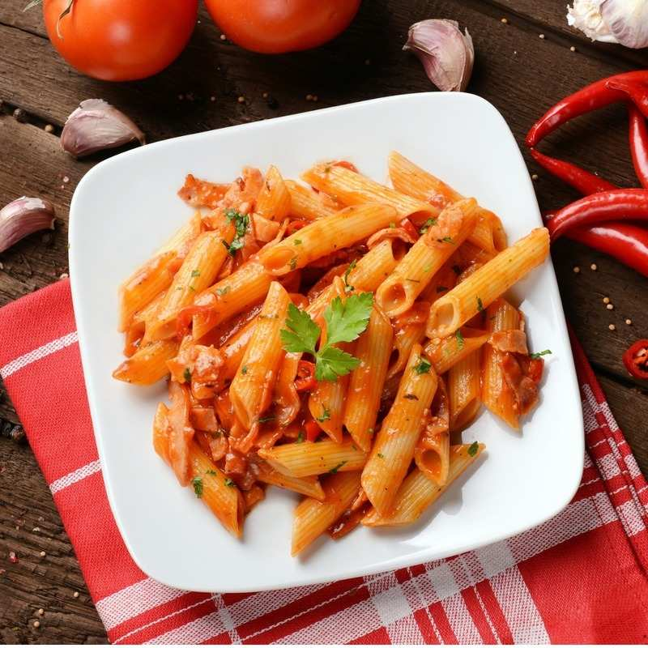

Penne Pasta with Tomato Sauce

This is a recipe describing how to make my favourite dish - penne pasta with tomato sauce.
Ingredients
- De Cecco penne pasta
- San Marzano canned tomatoes
- Olive oil
- Salt
- Pepper
- Garlic
Steps
- Add 200ml of olive oil to a sauce pan over medium heat.
- Grate 1 clove of garlic and add to the sauce pan; cook until it yellows.
- Add 1 can of San Marzano canned tomatoes to the sauce pan.
- Add salt and pepper to taste; let the sauce reduce until desired consistency.
- Boil water; once boiling add penne pasta and cook for 3 minutes less than the package recommends.
- Take out the pasta and add it to the sauce to finish cooking; selectively add pasta water to the tomato sauce.
- Taste noodle; remove from heat once the pasta is cooked to your liking.